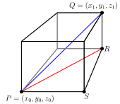

Section1.1Functions of Several Variables and Three Dimensional Space
Definition1.1.1.
A function \(f\) of two independent variables is a rule that assigns to each ordered pair \((x,y)\) in some set \(D\) exactly one real number \(f(x,y)\text{.}\)
Definition1.1.2.
The domain of a function \(f\) is the set of all inputs at which the function is defined.
Activity1.1.1.
Consider the concentration, C, (in mg/liter) of a drug in the blood as a function of the amount of drug given, \(x\text{,}\) and the time since injection, \(t\text{.}\) For \(0 \leq x \leq 6 \) mg and \(t \geq 0\) hours, we have
\begin{equation*}
C = f(x,t) = 28te^{(6-x)t}
\end{equation*}
(a)
Which of the following best describes the meaning of \(f(2,3)\) in this context?
\(f(2,3)\) is the concentration in the blood 3 hours after a 2 mg injection.
\(f(2,3)\) is the concentration in the blood 2 hours after a 3 mg injection.
\(f(2,3)\) is the change in concentration of a 3 mg dose 2 hours after injection.
\(f(2,3)\) is the change in concentration of a 2 mg does 3 hours after injection.
Activity1.1.2.
A car rental company charges a one-time application fee of 30 dollars, 50 dollars per day, and 11 cents per mile for its cars.
(a)
Write a formula for the cost, \(C\text{,}\) of renting a car as a function of the number of days, \(d\text{,}\) and the number of miles driven, \(m\text{.}\)
(b)
Describe the domain of the function.
Activity1.1.3.
Which of the following best describes the domain of \(f\text{?}\)
Describe a physical or real-world example of a function of two variables. What is its domain?
(b)
Describe a physical or real-world example of a function of three variables. What is its domain?
Definition1.1.3.
A three-dimensional coordinate system is called right-handed if, after pointing your right thumb in the direction of the positive \(x\)-axis, your remaining fingers curl (as if you are making a fist) in the direction from the positive \(y\)-axis to the positive \(z\)-axis. Otherwise, it’s called left-handed.
Activity1.1.8.
Which of the following best describes the two coordinate systems?
The first one is right-handed, while the second is left-handed.
The first one is left-handed, while the second is right-handed.
They are both right-handed.
They are both left-handed.
Definition1.1.4.
The graph of a function \(f = f(x,y)\) is the set of points of the form \((x,y,f(x,y))\text{,}\) where the point \((x,y)\) is in the domain of \(f\text{.}\)
Definition1.1.5.
A trace of a function \(f\) of two independent variables \(x\) and \(y\) in the \(x\) direction is a curve of the form \(z = f(x,c)\text{,}\) where \(c\) is a constant. Similarly, a trace of a function \(f\) of two independent variables \(x\) and \(y\) in the \(y\) direction is a curve of the form \(z = f(c,y)\text{,}\) where \(c\) is a constant.
Definition1.1.6.
A level curve (or contour) of a function \(f\) of two independent variables \(x\) and \(y\) is a curve of the form \(k = f(x,y)\text{,}\) where \(k\) is a constant.
Activity1.1.9.
Which of the following sets up the vertical trace for \(x=1\) for the function \(z = 4-x-y\text{?}\)
\(\displaystyle 1 = 4-x-y\)
\(\displaystyle z = 3-y\)
\(\displaystyle x + y = 3\)
\(\displaystyle z = 3-x\)
Activity1.1.10.
Which of the following is a contour map for the function \(f(x,y) = \sqrt{x^2 + y^2}\text{?}\)
Activity1.1.11.
Sketch the contour map for the function \(f(x,y) = \sqrt{8+8x-4y-4x^2-y^2}\) for \(c = 0,1,2,3,4\)
Activity1.1.12.
Which of the following best describes the difference between traces and contours?
There is no difference; they are the same.
Traces are "vertical" while contours are "horizontal."
Traces never involve the \(z\) coordinate, while contours do.
Contours never involve the \(z\) coordinate, while traces do.
Definition1.1.7.
A sphere is the set of all points equidistant from a fixed point. The fixed point is called the center of the sphere, and the distance from the center to any point on the sphere is called the radius of the sphere, and the distance from the center to all the points in the sphere is called the radius.
Activity1.1.13.
Let \(P=(x_0, y_0, z_0)\) and \(Q=(x_1, y_1, z_1)\) be two points in \(\R^3\text{.}\) These two points form opposite vertices of a rectangular box whose sides are planes parallel to the coordinate planes as illustrated in Figure 1.1.8, and the distance between \(P\) and \(Q\) is the length of the blue diagonal shown in Figure 1.1.8.
Figure1.1.8.The distance formula in \(\R^3\text{.}\)
Consider the right triangle \(PRS\) in the base of the box whose hypotenuse is shown as the red line in Figure 1.1.8. What are the coordinates of the vertices of this triangle? Since this right triangle lies in a plane, we can use the Pythagorean Theorem to find a formula for the length of the hypotenuse of this triangle. Find such a formula, which will be in terms of \(x_0\text{,}\)\(y_0\text{,}\)\(x_1\text{,}\) and \(y_1\text{.}\)
Now notice that the triangle \(PRQ\) whose hypotenuse is the blue segment connecting the points \(P\) and \(Q\) with a leg as the hypotenuse \(PR\) of the triangle found in part (a) lies entirely in a plane, so we can again use the Pythagorean Theorem to find the length of its hypotenuse. Explain why the length of this hypotenuse, which is the distance between the points \(P\) and \(Q\text{,}\) is
Find the equation of the sphere is center \((-6, -4, -3)\) with radius \(3\text{.}\) Normalize your equation so that the coefficient of \(x^2\) is \(1\text{.}\)
(b)
Give an equation which describes the intersection of this sphere with the plane \(z = -2\text{.}\)